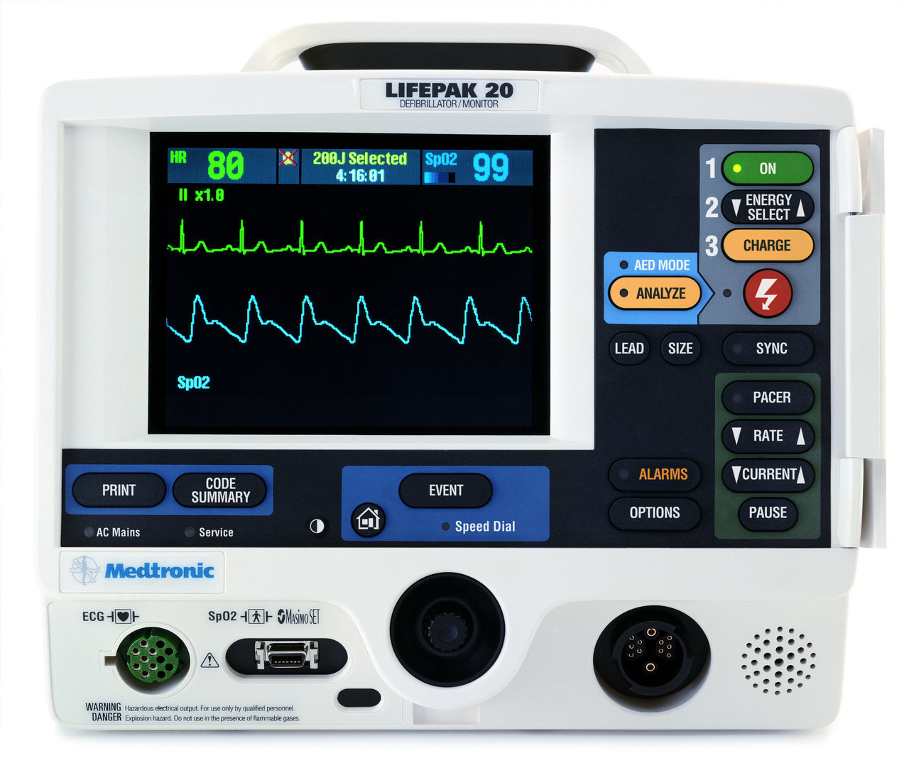

UNSTABLE
BRADYCARDIA
Unstable means the patient has one of these:
- Chest
pain
- Shortness
of breath
- Hypotension
- Altered
Mental Status
- Shock
- Pulmonary
Edema
We
pace unstable bradycardia, ASAP!
Turn
on the Monitor Defibrillator

Press
the PACER BUTTON.
Use the LEAD BUTTON Select lead
II
Place
the electrodes
Make
sure the pacer is in Demand mode. Press OPTIONS
BUTTON, then use the speed dial to select DEMAND.
Demand mode means that the pacer delivers an impulse only when needed.
If an intrinsic beat occurs prior to the set interval, the pacer
won't fire.
Set
the rate at 70-80 (arrow keys)
You will see the sense markers (little triangles over each QRS)
Set current strength at
40-60 mA (arrow keys), you may have to go upto 100mA.
As you increase the current strength, watch the monitor
for electrical capture.
This means that the spike from the pacer is followed immediately by a
QRS complex.

Now
you have electrical capture.
Now check the pulse to make sure it is a perfusing rhythm, which means
now you have mechanical capture.
Once
the TCP is noted to be working , give
sedation with Valium 5mg IV. This is necessary since TCP is
painful.
While pacing is going on, if at any point you need to find out what is
the underlying non-paced rhythm, hold down the PAUSE
BUTTON. The pacing will resume when you take your finger off.
If
the TCP does not achieve electrical capture, try increasing the amps
stepwise upto 200mA. You should see a capture by the time you
hit 100mA. Try adjusting the EKG gain so
switch leads if needed. If all steps fail and you dont get a
capture, switch the pacemaker to non-demand mode, where it fires at a
set interval regardless of intrinsic rhythm.
While
getting ready to pace, administer Atropine 0.5mg IV . This may be
repeated every 3 minutes upto a max of 3mg. Do not let this delay the
use of TCP in an unstable patient. Atropine may also be given 2mg in 10ml
Normal Saline through ET
If
TCP fails, start Dopamine at 2-10 micrograms/kg/minute
Once
his rate is stabilized on the TCP, make preparations for transvenous
pacing by the cardiologist.
TCP should not be used for more than 6 hours and is only a stop-gap
measure.
If during the pacing, patient goes into a shockable rhythm, press the
CHARGE BUTTON, and pacing will stop.
Remember,
while you are getting the TCP ready and putting the leads on, the rest
of the team should be taking care of other items on the list:
- Oxygen
by simple face mask
- start
an IV
- 3 lead
EKG to be hooked up
- Pulse
oximeter to be hooked up
- NIBP
to be connected to monitor BP
- Draw
venous blood and sent it off.
- If
chest pain is present, this needs to be addressed
Something to remember about Atropine. Atropine
is not effective for Second degree block Type II or for Third
Degree Block. In second degree block type II, what you see is
dropped QRS complexes. In third degree block , you will see
total dissociation of P waves and QRS complexes.
Second Degree AV Block, Type I (PR interval gradually increases
until a QRS is dropped)

Second Degree AV Block, Type II (PR stays the same, QRS just gets
dropped)
Third Degree Block (P waves are regular, QRS complexes are regular,
but PR is variable since there is no fixed relationship between P and
QRS)
Sick Sinus Syndrome (Observe how the entire P-QRS complex is dropped,
and how the PR intervals are normal) This includes Sinus Arrest
(pauses are NOT multiples of RR intervals) and Sinus Block (pauses are
multiples of RR intervals)

Atropine can be problematic in myocardial ischemia, because it increases
myocardial oxygen demand.
Symptomatic SSS needs permanent pacing. 50% of these patients
eventually will develop tachybradyarrhythmias such as AFib.
If rate <40 pacing advisable even if asymptomatic.